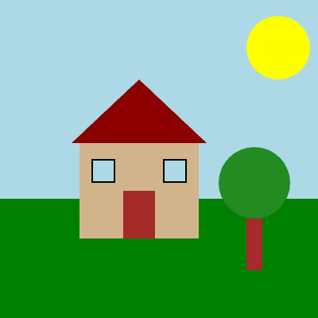

Unit 1 Creative Mini-Task
Create an original visual scene using what you learned in Unit 1
Unit 1 Creative Mini-Task
Build in CMU: 1.6.2 Creative Task 1 (CMU CS Academy)
Submit in CMU: Click Submit when finished
Submit PDF: Complete Planning Questions and Reflection Questions
Purpose
This is your first chance to create something completely your own using code. You will design and build an original visual scene or picture using only the Unit 1 concepts you have learned: drawing shapes, positioning, colors, and styling.
Creative Tasks help you practice thinking like a programmer: planning before coding, solving problems as they come up, and reflecting on your work.
What You Will Create
Choose one idea to build:
- A scene from real life (park, room, city, classroom, sports field, etc.)
- A nature picture (sunset, forest, ocean, mountains, garden, etc.)
- An object or character (robot, animal, vehicle, building, etc.)
- A simple design or logo
- Anything else you can imagine using shapes and colors!
Unit 1 Concepts Only
Your project should only use what we learned in Unit 1:
- Shapes:
Circle,Rect,Oval,Line,Star,Polygon,Label - Positioning:
centerX,centerY, coordinates - Styling:
fill,border,borderWidth,opacity - Colors: named colors and
rgb(r, g, b) - Layering: shapes drawn later appear on top
Not used yet: functions, events, variables, animation, conditionals.
Program Requirements
Your program must include:
- At least 6 total shapes
- At least 3 different shape types (e.g., Circle, Rect, Line)
- At least 2 different styling options used intentionally (e.g.,
fill,border,opacity) - Layering (shapes overlapping to create depth)
- A clear purpose (someone looking at it should understand what it is)
Step-by-Step: What To Do
- Plan your idea – Decide what you want to create. Sketch it on paper if helpful.
- Think about shapes – What shapes will you need? Where will they go?
- Open CMU CS Academy – Go to 1.6.2 Creative Task 1.
- Build your program – Code your scene one shape at a time. Test frequently!
- Submit in CMU – Click the Submit button when finished.
- Complete your reflection – Answer the reflection questions below.
Planning Questions (Think Before You Code)
Answer these questions before or while you build:
- Description: What are you creating? What is the purpose or theme?
- Objects: List at least 4 objects or elements you will include.
- Shapes: What shapes will you use for each object?
- Colors: What colors will you use and why?
- Layering: What should be in the background vs. foreground?
Reflection Questions (After You Finish)
Answer these questions after completing your program:
- Difficulties & Opportunities: Describe one challenge you faced while coding OR one improvement you added that wasn't in your original plan. How did you handle it?
- Unit 1 Concepts: Identify and explain at least two Unit 1 concepts you used in your program. What did each concept do in your project?
- Future Goals: If you had more time, what would you add or improve?
Grading Rubric
Your Creative Mini-Task will be graded using this rubric:
| Category | Strong Evidence (100%) | Inconsistent Evidence (70%) | Weak/No Evidence (35%) |
|---|---|---|---|
| Program Design 30% |
Program clearly demonstrates its purpose and incorporates concepts from Unit 1. | Program does not clearly demonstrate its purpose OR does not incorporate Unit 1 concepts. | Program does not use concepts from Unit 1. |
| Program Development 35% |
Student identifies at least one difficulty or opportunity AND explains how they resolved or incorporated it. | Student identifies a difficulty or opportunity but does not explain the resolution. | Student does not identify any difficulty or opportunity. |
| Reflection 35% |
Student identifies and explains at least two coding concepts from Unit 1 and how they are applied in the program. | Student identifies at least one coding concept and how it is applied. | Student is not able to identify any coding concepts from Unit 1 in their program. |
| Bonus | Extra points may be awarded for originality, cleverness, complexity, and an engaging or compelling project. | ||
EXEMPLAR: Unit 1 Creative Mini-Task
Below is an example of a project that would meet expectations for the Unit 1 Creative Mini-Task.
PART 1 – PLANNING
1. Description
I am creating a simple house scene. The purpose is to show a house with a yard on a sunny day. I want it to look cheerful and colorful.
2. Objects
- Sky background
- Sun
- Grass
- House (walls and roof)
- Door and windows
- Tree
3. Shapes
- Sky: large
Rect - Sun:
Circle - Grass:
Rect - House walls:
Rect - Roof:
Polygon(triangle) - Door:
Rect - Windows:
Rect - Tree trunk:
Rect - Tree leaves:
Circle
4. Colors
- Sky: lightBlue
- Sun: yellow
- Grass: green
- House: tan walls, darkRed roof
- Door: brown
- Windows: lightBlue with black border
- Tree: brown trunk, green leaves
5. Layering
- Background: sky, then sun
- Middle: grass, house, tree trunk
- Foreground: door, windows, tree leaves
PART 2 – SCREENSHOT
Example Output:
PART 3 – SAMPLE CODE
Here is what the code might look like:
# Sky background
Rect(0, 0, 400, 250, fill='lightBlue')
# Sun
Circle(350, 60, 40, fill='yellow')
# Grass
Rect(0, 250, 400, 150, fill='green')
# House walls
Rect(100, 180, 150, 120, fill='tan')
# Roof (triangle)
Polygon(90, 180, 175, 100, 260, 180, fill='darkRed')
# Door
Rect(155, 240, 40, 60, fill='brown')
# Windows
Rect(115, 200, 30, 30, fill='lightBlue', border='black', borderWidth=2)
Rect(205, 200, 30, 30, fill='lightBlue', border='black', borderWidth=2)
# Tree trunk
Rect(310, 260, 20, 80, fill='brown')
# Tree leaves
Circle(320, 230, 45, fill='forestGreen')PART 4 – REFLECTION
1. Difficulties & Opportunities
One difficulty I faced was getting the roof to line up with the house walls. At first my triangle was in the wrong place. I had to use the Inspector tool to find the exact coordinates for the corners of the house, then I adjusted my Polygon coordinates to match. This took some trial and error but I figured it out.
2. Unit 1 Concepts
Two Unit 1 concepts I used:
- Layering: I drew the sky first, then the grass, then the house and tree on top. This makes the background appear behind everything else.
- Border styling: I used
border='black'andborderWidth=2on the windows to make them look more like real windows with frames.
3. Future Goals
If I had more time, I would add clouds in the sky using Ovals, flowers in the grass using small Circles, and maybe a path leading to the door.